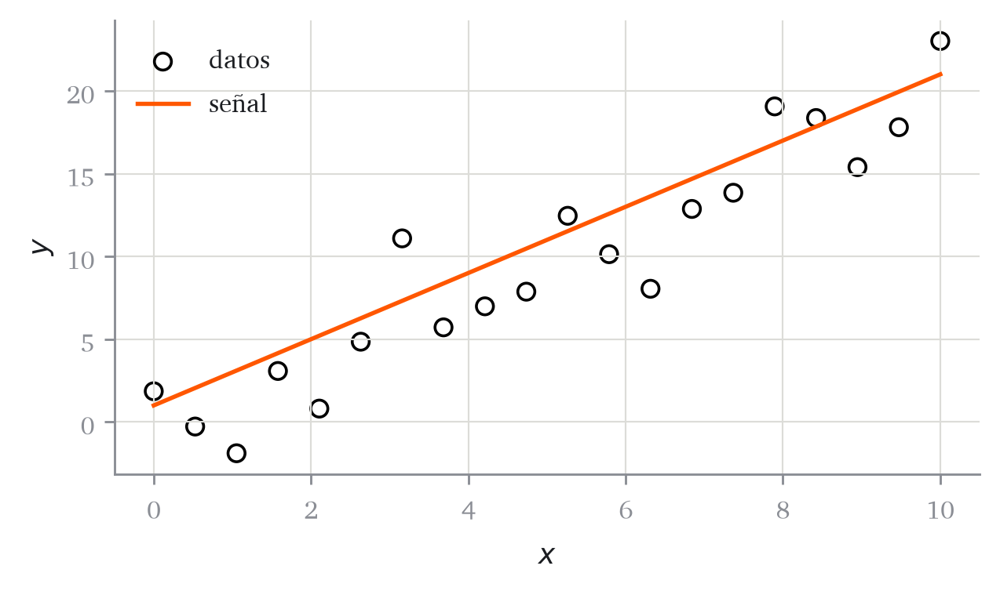

![]()
n = 20
sigma = 3.0
titulo = "señal más ruido"
print(n, sigma, titulo)20 3.0 señal más ruidoEste anexo contiene una introducción a Python. Su objetivo no es enseñar a programar sino asegurar que sabéis ejecutar código desde Google Colab.
Abre el cuaderno de esta página en Google Colab. Lo primero, Archivo → Guardar una copia en Drive.
Colab ejecuta Python en un ordenador de Google, desde el navegador. No hay que instalar nada: basta una cuenta de Google. Las librerías del curso (torch, numpy, pandas, matplotlib, scikit-learn) ya vienen instaladas.
Cada capítulo publica su cuaderno con el código completo, el mismo que aparece en los apuntes, y el enlace de su primera página lo abre en Colab.
El cuaderno que se abre desde el enlace es de solo lectura. Puedes ejecutarlo, pero si cierras la pestaña pierdes todo lo que hayas escrito. Si quieres una versión propia tendrás que hacer tu copia. Son seis pasos y se hacen una vez por cuaderno:
Copia de. La pestaña vieja, la de solo lectura, ya no hace falta y puedes cerrarla.01 senal y ruido - mis notas.Tu copia vive en Google Drive, en una carpeta que Colab crea llamada Colab Notebooks. Para volver a ella otro día tienes dos caminos: entrar en drive.google.com y abrir esa carpeta, o abrir Colab e ir a Archivo → Abrir cuaderno, pestaña Reciente.
Un cuaderno es una lista de celdas. Las de código se ejecutan y las de texto solo se leen.
[7], dice que esa celda fue la séptima que se ejecutó. Es el orden de ejecución, no el orden en que está escrita en la página.Esa última opción resuelve la mayoría de los problemas del primer día.
Una variable es un nombre para un valor. Se asigna con =, que no es igualdad matemática sino “guarda esto con este nombre”.
n = 20
sigma = 3.0
titulo = "señal más ruido"
print(n, sigma, titulo)20 3.0 señal más ruido20 es un entero y 3.0 un decimal. Los textos van entre comillas. La última expresión de una celda se muestra sola, sin print:
n * sigma60.0Una lista se escribe entre corchetes y se indexa desde cero:
pesos = [0.2, 0.2, 0.6]
pesos[0], pesos[2], len(pesos)(0.2, 0.6, 3)Los paréntesis hacen una tupla, que funciona igual pero no se puede modificar. Y una asignación puede repartir varios valores a la vez, algo que el curso usa mucho:
a, b = -0.3, 0.2
media, desviacion = 0.0, 1.0
a, b, media, desviacion(-0.3, 0.2, 0.0, 1.0)def define una función: un cálculo con nombre, que recibe argumentos y devuelve un valor con return. El cuerpo va indentado cuatro espacios, y la indentación es obligatoria: es lo que marca dónde empieza y acaba la función.
def recta(x, pendiente, intercepto):
return pendiente * x + intercepto
recta(2.0, 3.0, 1.0)7.0Los argumentos se pueden pasar por nombre, y así se lee mucho mejor cuando son varios:
recta(2.0, intercepto=1.0, pendiente=3.0)7.0for repite algo para cada elemento de una lista, y if decide. Los dos usan indentación.
mejor = -100.0
for candidato in [1.5, 2.0, 2.5]:
valor = -(candidato - 2.0) ** 2
if valor > mejor:
mejor = valor
mejor_candidato = candidato
mejor_candidato, mejor(2.0, -0.0)Ese bucle es, en pequeño, el del final del capítulo 1: probar candidatos y quedarse con el mejor.
Una parte importante del curso trabaja con tensores de torch. Un tensor es una tira de números sobre la que las operaciones actúan elemento a elemento, sin escribir bucles.
import torch
x = torch.tensor([0.0, 1.0, 2.0, 3.0])
2 * x + 1tensor([1., 3., 5., 7.])Compáralo con una lista: 2 * [0.0, 1.0] repetiría la lista en lugar de multiplicar. Las tres formas de crear tensores que usa el capítulo 1:
torch.linspace(0, 10, 5) # 5 valores igualmente espaciados de 0 a 10tensor([ 0.0000, 2.5000, 5.0000, 7.5000, 10.0000])torch.randn(4) # 4 números al azar de una normal estándartensor([-0.9223, 0.2655, -1.3283, 1.5076])torch.normal(3.0, 2.0, size=(4,)) # al azar, con media 3 y desviación 2tensor([1.2467, 0.8524, 3.5465, 2.6371])Dos métodos que aparecen en muchas celdas:
.item() saca el número de un tensor de un solo elemento, para poder usarlo como un decimal normal. Sobre un tensor de varios da error..numpy() convierte el tensor en un array de numpy, que es lo que entiende matplotlib al dibujar.y = torch.tensor([1.0, 4.0, 9.0])
y[0].item(), y.numpy()(1.0, array([1., 4., 9.], dtype=float32))Existen varias formas de indexar tensores:
desde:hasta, donde el segundo extremo no entra:x = torch.linspace(0, 10, 8)
x[0], x[-1], x[:3], x[2:5](tensor(0.),
tensor(10.),
tensor([0.0000, 1.4286, 2.8571]),
tensor([2.8571, 4.2857, 5.7143]))grandes = x > 5
grandes, x[grandes], grandes.sum().item()(tensor([False, False, False, False, True, True, True, True]),
tensor([ 5.7143, 7.1429, 8.5714, 10.0000]),
4)Y por lista de índices:
indices = torch.tensor([0, 2, 4])
x[indices]tensor([0.0000, 2.8571, 5.7143])A partir del capítulo 3 los datos no son una tira sino una tabla: una fila por observación y una columna por variable. En código es un tensor de dos dimensiones.
X = torch.stack([torch.ones(5), torch.linspace(0, 4, 5)], dim=1)
Xtensor([[1., 0.],
[1., 1.],
[1., 2.],
[1., 3.],
[1., 4.]])Aquí, dim indica que ambos vectores han de juntarse por columnas.
.shape da el tamaño como (filas, columnas). Mirar la forma de un tensor es el primer diagnóstico cuando algo no cuadra:
X.shapetorch.Size([5, 2])Se selecciona con dos índices separados por coma: primero filas, después columnas. Los dos puntos solos significan “todas”:
X[0], X[:, 1](tensor([1., 0.]), tensor([0., 1., 2., 3., 4.]))Y @ es el producto matricial.
w = torch.tensor([1.0, 2.0])
X @ wtensor([1., 3., 5., 7., 9.])Los resúmenes estadísticos habituales, no requieren bucles.
y = torch.tensor([2.0, 4.0, 4.0, 5.0])
y.mean(), y.std(), y.sum(), len(y)(tensor(3.7500), tensor(1.2583), tensor(15.), 4)Los resultados del curso son números que hay que leer, así que conviene mostrarlos con los decimales justos. La f delante de las comillas permite meter un cálculo entre llaves, y :.4f pide cuatro decimales:
error = ((y - y.mean()) ** 2).mean()
print(f"error cuadrático medio: {error.item():.4f}")error cuadrático medio: 1.1875Los conjuntos de datos del curso están publicados, así que se leen directamente desde su dirección, sin descargar nada a mano. La librería que usaremos para la lectura es pandas. Los objetos con los que trabaja se denominan DataFrame: una tabla con nombres de columna.
import pandas as pd
url = "https://cunef-aap.github.io/adecd-26-27/datos/airbnb_madrid.csv"
datos = pd.read_csv(url)
datos.shape(15000, 17)Quince mil filas y diecisiete columnas. .head(3) muestra las tres primeras:
datos.head(3)| id | host_id | neighbourhood_group_cleansed | neighbourhood_cleansed | latitude | longitude | property_type | room_type | accommodates | bathrooms | bedrooms | beds | price | minimum_nights | number_of_reviews | review_scores_rating | availability_365 | |
|---|---|---|---|---|---|---|---|---|---|---|---|---|---|---|---|---|---|
| 0 | 1455584067535825907 | 145991627 | Centro | Sol | 40.41663 | -3.701704 | Entire home | Entire home/apt | 4 | 1.0 | NaN | 2.0 | 132.67 | 1.0 | 35 | 4.46 | 188 |
| 1 | 1645723810293809914 | 130211899 | Centro | Embajadores | 40.40891 | -3.703640 | Private room in bed and breakfast | Private room | 2 | 1.0 | 1.0 | 1.0 | 83.00 | 1.0 | 2 | 5.00 | 313 |
| 2 | 1546292768118710433 | 217067249 | Centro | Cortes | 40.41413 | -3.699830 | Entire rental unit | Entire home/apt | 6 | 3.0 | 3.0 | 4.0 | 497.00 | 1.0 | 4 | 5.00 | 111 |
Una columna se saca por su nombre entre corchetes, y puede resumirse igual que un tensor:
datos["price"].mean()np.float64(150.95539266666665)Para pasar de una columna de pandas a un tensor de torch:
precio = torch.tensor(datos["price"].values, dtype=torch.float32)
precio[:5]tensor([132.6700, 83.0000, 497.0000, 151.5600, 140.0000])Para llevarse varias columnas a la vez, se pasa la lista de nombres. El resultado sigue siendo una tabla, y .dropna() quita las filas a las que les falte algún valor:
columnas = ["accommodates", "bedrooms", "number_of_reviews"]
tabla = datos[columnas].dropna()
tabla.shape(11598, 3)Y esa tabla se convierte en una matriz de torch igual que antes, con .values. Es exactamente la matriz de datos del capítulo 3: una fila por caso y una columna por variable.
X = torch.tensor(tabla.values, dtype=torch.float32)
X.shape, X[:3](torch.Size([11598, 3]),
tensor([[ 2., 1., 2.],
[ 6., 3., 4.],
[ 6., 3., 10.]]))Hay una segunda forma de seleccionar, por posición en lugar de por nombre, que es .iloc. Lleva dos índices separados por coma, filas y columnas, igual que un tensor de dos dimensiones:
datos.iloc[0:3, 0:4]| id | host_id | neighbourhood_group_cleansed | neighbourhood_cleansed | |
|---|---|---|---|---|
| 0 | 1455584067535825907 | 145991627 | Centro | Sol |
| 1 | 1645723810293809914 | 130211899 | Centro | Embajadores |
| 2 | 1546292768118710433 | 217067249 | Centro | Cortes |
Entre las dos, en el curso se usa casi siempre la selección por nombre: es más larga de escribir pero no se rompe cuando cambia el orden de las columnas.
Para dibujar gráficos, usaremos matplotlib.
from matplotlib import pyplot as plt
x = torch.linspace(0, 10, 20)
y = 2 * x + 1 + 3 * torch.randn(20)
fig, ax = plt.subplots(figsize=(5, 3))
ax.scatter(x.numpy(), y.numpy(), color="black", facecolors="none",
label="datos")
ax.plot(x.numpy(), (2 * x + 1).numpy(), color="#ff5700", label="señal")
ax.set(xlabel="$x$", ylabel="$y$")
ax.legend()
plt.tight_layout()
ax.scatter pinta puntos y ax.plot una línea. Fíjate en los .numpy(): sin ellos matplotlib no sabe dibujar un tensor.
torch.randn da números distintos cada vez, así que una figura no saldría dos veces igual. Fijar la semilla hace que la secuencia de números al azar sea siempre la misma:
torch.manual_seed(42)
primera = torch.randn(3)
torch.manual_seed(42)
segunda = torch.randn(3)
primera, segunda(tensor([0.3367, 0.1288, 0.2345]), tensor([0.3367, 0.1288, 0.2345]))Los dos tensores coinciden. Todos los capítulos fijan la semilla al principio, y de ahí que las cifras del texto sean reproducibles.
| Lo que sale en rojo | Qué ha pasado |
|---|---|
NameError: name 'x' is not defined |
no has ejecutado la celda donde se define x. Ejecuta de arriba abajo |
IndentationError |
falta o sobra la indentación del cuerpo de un def, un for o un if |
TypeError: only one element tensors can be converted... |
.item() sobre un tensor de varios elementos |
RuntimeError: ... size mismatch o shapes cannot be multiplied |
un @ entre tensores cuyas formas no encajan. Mira los dos .shape |
| Ningún error, pero el número no cuadra | cambiaste una celda de arriba y no la volviste a ejecutar. Reiniciar y ejecutar todo |
El último es el más traicionero, porque no avisa. Ante cualquier resultado que no cuadre, lo primero es reiniciar y ejecutar todo.
Ejercicios de práctica.
2 + 2.n = 50 y sigma = 2.0 en una celda, y en otra celda calcula n * sigma. Reinicia el entorno y ejecuta solo la segunda: explica el error que sale.x = torch.linspace(0, 1, 5) y calcula 3 * x - 1 sin escribir ningún bucle.cuadrado(z) que devuelva z ** 2 y compruébala con un tensor..mean().t = torch.linspace(0, 20, 11), saca los tres primeros valores, los mayores que \(12\), y cuántos hay de estos últimos.torch.stack: la primera de unos y la segunda torch.linspace(1, 4, 4). Di su .shape y calcula su producto por torch.tensor([2.0, 3.0]).print y una f.airbnb_madrid.csv desde su dirección, di cuántas filas tiene y calcula la media de la columna bedrooms.x = torch.linspace(0, 5, 30) e y = x ** 2 + torch.randn(30), con etiquetas en los dos ejes.7, genera torch.randn(3), vuelve a fijarla en 7 y genera otros tres. Di si coinciden y por qué.